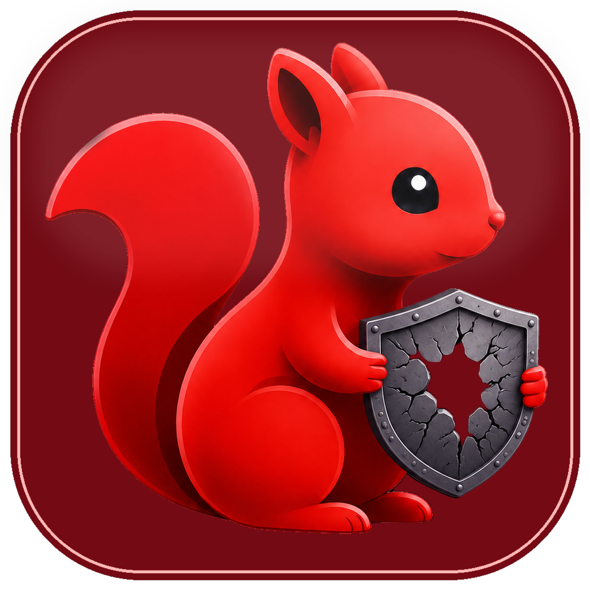

停止后，Codex 的请求会恢复直连配置，正在进行的本地转发也会立即结束。
本地代理、指令增强与 Skills 工作流集中管理。数据留在本机，状态一目了然。
julong-codex mcp serve --backend auto
接入 OpenAI 兼容服务，统一管理连接、模型与故障切换顺序。
供应商 -- 将从故障切换队列中移除，此操作不会删除其他供应商。
这会停止当前代理，并撤销本应用写入的本地配置，让 Codex 回到部署前状态。